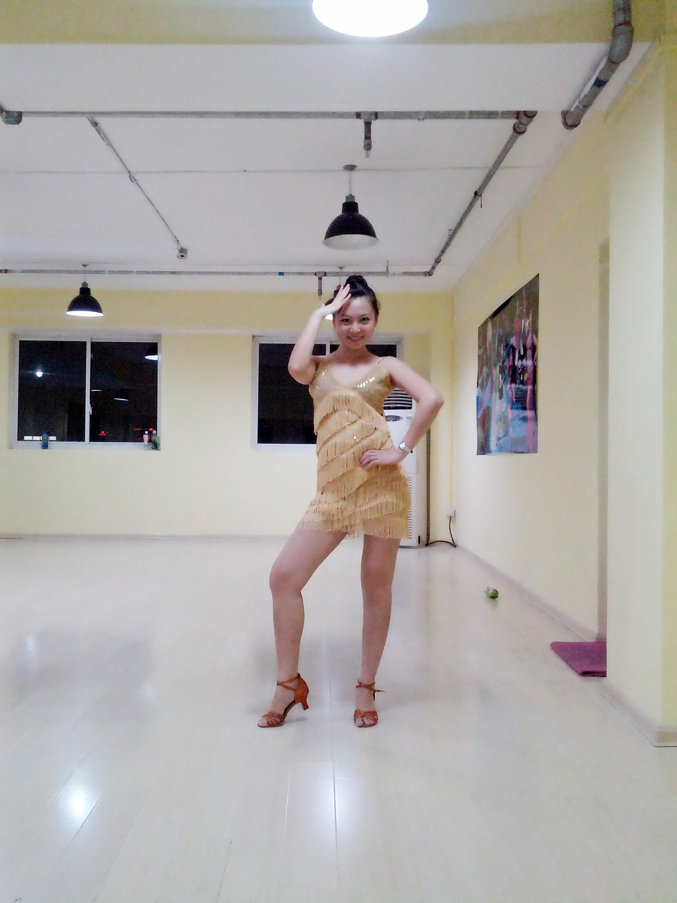

I started taking piano lessons since I was four and a half. When I entered school, I quit and started to learn it by myself. Music can always bring me inspiration and pleasure. Here are some of my piano pieces.
Also, I have been studying Latin Dance for several years, below are some pictures of performance.
